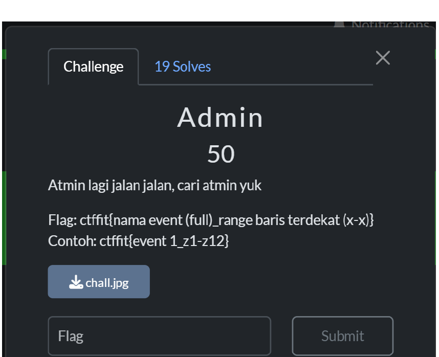
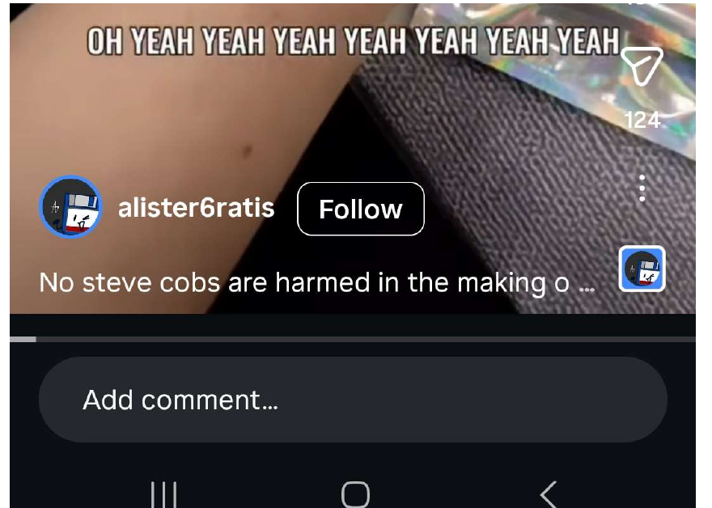
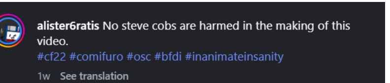
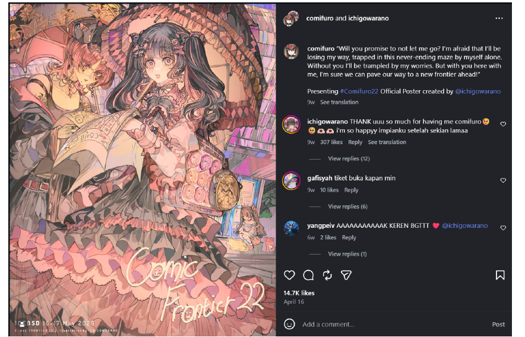
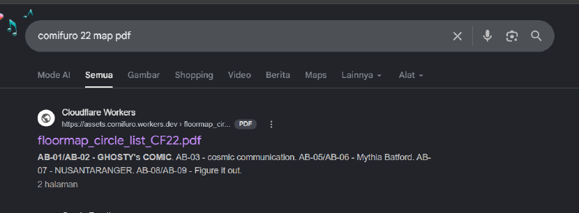
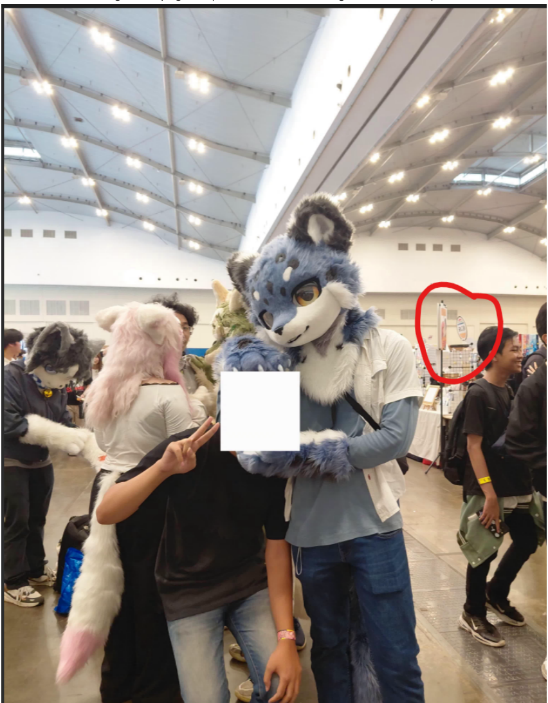
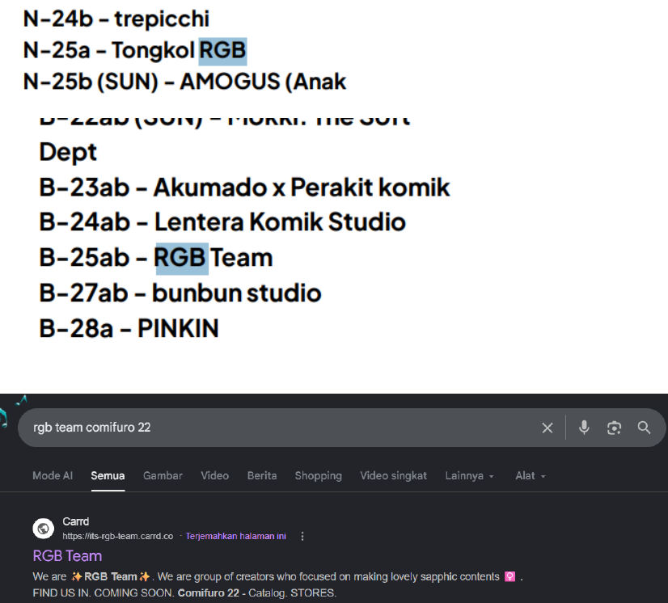
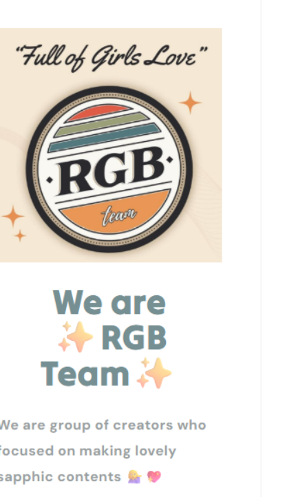
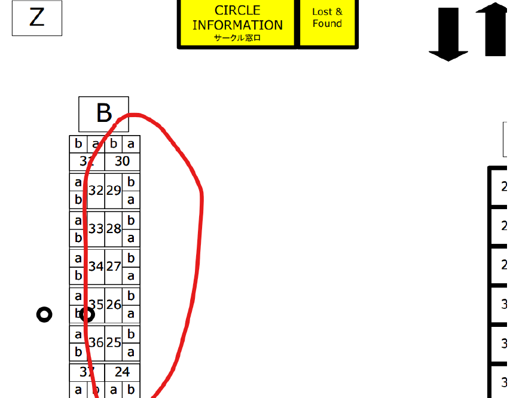

FIT Competition / OSINT
Admin Fury
A short OSINT writeup on identifying the full event name and determining the required booth row range from a single challenge photo.
Summary
The visual clues pointed to Comifuro. After confirming the event as Comic Frontier 22, the official venue map was used to locate the RGB Team booth and derive the booth row range required by the flag.
- EventComic Frontier 22
- Booth clueRGB Team
- PositionB-25ab
- RangeB24-B30
Challenge
The prompt asks for the full event name and the nearest booth row range. This means the goal is not only to identify the event, but also to determine the booth's location on the venue map.

Identifying The Event
The initial clues pointed toward Comifuro. However, since the flag requires the full event name, the exact edition also needed to be identified. The most useful clues were the event wristband and several social media posts containing the #cf22 hashtag.


#cf22 hashtag confirmed the event edition.
Finding The Map
Once the event was confirmed, the next step was locating the venue map. Searching for comifuro 22 map pdf quickly led to the official floor map and booth directory.

Matching The Booth
The challenge photo contains a booth sign with the text RGB. Searching the booth directory revealed a match for RGB Team, located at B-25ab.



Deriving The Range
RGB Team is located at B-25ab. Since the challenge asks for the nearest booth row range rather than the exact booth, the surrounding area corresponds to B24-B30.

Flag
ctffit{Comic Frontier 22_b24-b30}